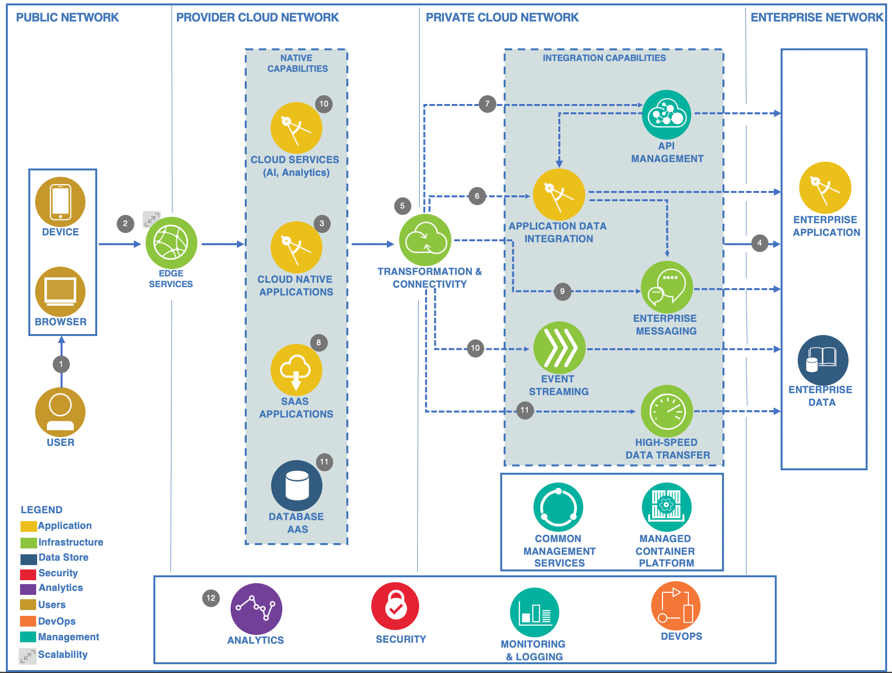

Reference Architecture
Cloud Application Integration Reference Architecture¶
The IBM Cloud Application Integration Reference Architecture explores common patterns in enterprises and hybrid cloud environments. The distributed component-based architecture supports lightweight fine-grained integration services to enable micro-services and on-demand runtime application-level composition and aggregation.
The Accelerator for Telco asset is based on this reference architecture, with a special focus on modular design and flexibility to extend the architecture as needed.
The following diagram shows an example scenario that leverages all key components within the architecture.

Scenario description:
- The user accesses a published service by using a mobile device.
- The cloud-native application is invoked.
- The application uses all the cloud services that are available on the cloud platform to enrich the user experience.
- The application accesses enterprise systems and system-of-record (SOR) data through an integration platform in a private cloud that provides all the integration patterns that are needed to run the transactions in line with business rules and approved processes.
- The requests go through a secure connectivity gateway that provides access to the private cloud network and the enterprise domain.
- Application integration logic is invoked and run on an integration flow runtime that orchestrates access to the back-end systems.
- Alternatively, the flows can be invoked by a set of managed APIs. In addition, the integration logic can also be orchestrated by the native application by using fine-grained API calls directly to the back-end system.
- Data between enterprise repositories and those in the cloud, such as software-as-a-service (SaaS) applications or database-as-a-service (DBaaS), can be synchronized through the integration platform with appropriate transformation and normalization.
- Asynchronous access to heterogeneous and closed systems can be done with enterprise messaging directly from native applications.
- Event-driven integration allows enterprise applications to consume and process events that are published by the native applications. It also allows for enterprise events to be published and consumed by cloud services such as analytics and cognitive.
- High-speed file transfer capabilities enable the quick synchronization of large content and data among cloud repositories and enterprise back-end systems across global geographies.
- The integration platform also integrates with enterprise nonfunctional aspects with a unified perspective on DevOps, logging and monitoring, and security.
Note that this architecture (and example scenario) is still implementation- and product-agnostic. The Accelerator for Telco is designed to implement the capabilities using IBM's Cloud Pak solution platforms, with IBM Cloud Pak for Integration being predominantly used.
The mapping of integration architecture capabilities to Cloud Pak capabilities is as follows:
| Architecture capability | Cloud Pak capability |
|---|---|
| Transformation & Connectivity | DataPower Gateway |
| API Management | API Connect |
| Application Data Integration | App Connect Enterprise |
| Enterprise Messaging | MQ Advanced |
| Event Streaming | Event Streams |
| High-speed Data Transfer | Aspera High Speed Transfer Server |
This architecture is open and can be extended as needed. As an example, components of the Data and AI reference architecture can be used to add analytics and AI to the solution architecture.
The Cloud Pak Architecture section explains how architecture capabilities are provided by IBM as part of the IBM Cloud Pak solutions.
The Solution Design section describes in detail how this generic architecture is specialized by the Accelerator for Telco to enable the specific scenarios required by solutions leveraging the TMF Open APIs.
References: